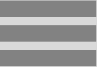
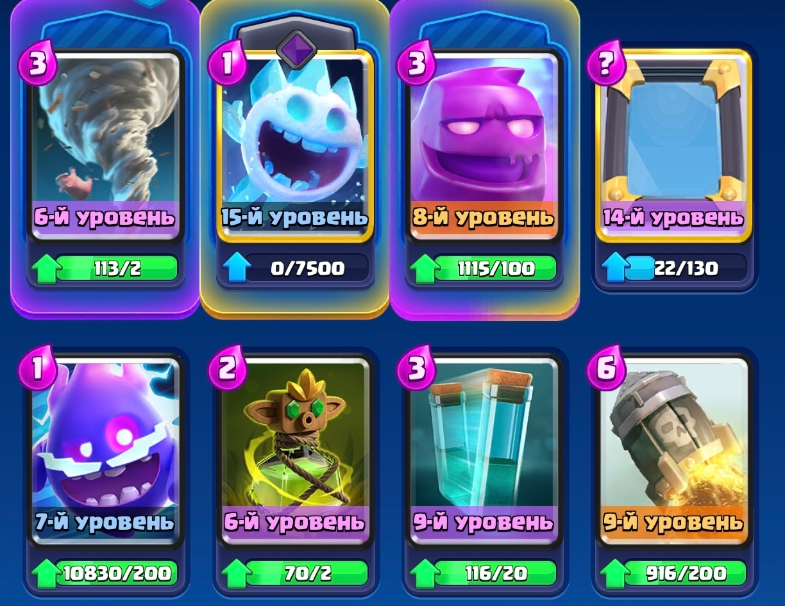

Колода недели

ыыыы
«Откуда у них элик?!»
Описание: колода для игры 2на2. Ее идея
заключается в
намеренной передаче
соперникам эликсира путем
постановки элексирного
голема с клоном

Применение: ставите двух
элексирных големов,
клонируйте. После их
смерти вслух возмутитесь
“откуда у них элик?!” и
наслаждайтесь
реакцией вашего союзника.